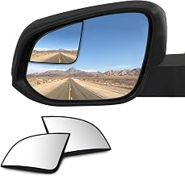
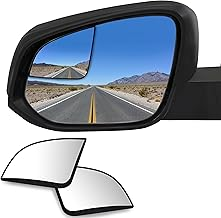
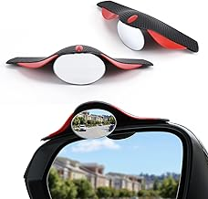
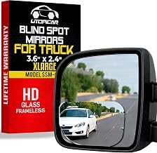
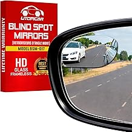

AMAZON US · EXTERIOR AUXILIARY MIRROR
先把形状做成矩阵，
再把车型做成壁垒
JOYTUTUS 已覆盖圆形、爱心形、楔形、3.7" × 2.5" XL 圆角矩形。下一步仍以形状矩阵优先，但任务改为补齐椭圆、半椭圆和紧凑矩形，避免重复开发；随后再切入车型专配 OEM 贴面。
GO / 分阶段立项
9 月先补形状空白
现有四个变体共享 101 条父体评价。新立项不再做圆形、爱心、楔形或同尺寸 XL，而是用椭圆/半椭圆验证新增点击；真正的长期壁垒放在 10 月车型专配。
01形状矩阵9 月立项
02OEM 贴面10 月立项
03快速功能11 月立项
04Wide Angle12 月评审
纳入圆形、矩形、椭圆、异形、包边、车型专配、卡车大尺寸贴片凸面镜。
排除车内全景镜、完整替换镜/拖车镜总成、电子 BSM、加热或灯光系统。
VERIFIED MARKET SIGNALS
有稳定需求，但通用基础款已经很拥挤
Flapen 为 26 个跟踪产品；卖家精灵为 100 个 ASIN、最近 30 天口径。两套样本用于交叉验证，不直接相加。
竞争结构
形状矩阵适合快速验证，不等于自然获得流量
78%Top 5 品牌份额
54%Top 5 商品点击份额
85%Sponsored placement
52%尺寸相关退货原因
同一父体下不同形状可能共享评论。下方评价数用于证明商品族有牵引，不代表每个子 ASIN 拥有相同销量。
高意图关键词
90 天搜索量、增长与转化
关键词搜索量增长CVR
blind spot mirror156K+15%5.8%
blind spot mirrors 2 pack58K+14%6.5%
blindspot mirror for car30K+38%6.8%
side mirror blindspot30K+22%6.1%
car side mirror blindspot7K+19%6.3%
VOICE OF CUSTOMER
路线排序仍要受尺寸、粘接和视野约束
主题允许重叠；百分比来自用户提供的 Flapen 报告。
FOUR DEVELOPMENT ROUTES
四条路线按“速度 → 壁垒 → 轻功能 → 备选”推进
卡片可左右拖动、触摸滑动或使用右侧箭头；价格与评价会随 Amazon 页面变化。
形状矩阵
已有四形状基础，优先补椭圆空白
车型专配 OEM
客单更高，适配与原车感构成壁垒
快速功能型
优先包装、胶材、包边与轻组合
Wide Angle
公司已有 XL，只评审中尺寸或优化
路线 01最高优先
SHAPE MATRIX
先补未覆盖形状，不重复做已有矩阵
JOYTUTUS 已有圆形、爱心形、楔形和 3.7" × 2.5" XL 圆角矩形。市场证据最强但公司尚未覆盖的是椭圆与半椭圆；紧凑矩形只有在尺寸明显小于当前 XL 时才值得进入。
首发建议
椭圆 + 半椭圆 + 紧凑矩形
第三款必须与现有 B0GVJLKFZD 的 3.7" × 2.5" XL 形成明确尺寸差，不满足则改做椭圆铝框版。
Amazon 形状证据矩阵11 个竞品 ASIN · 点击 ASIN/卡片跳转 Amazon
 圆形
圆形B07ZFHF14Q
LivTee 2" Round
无框 · 可调 · 2件装
$6.994.6★ · 26,414
JOYTUTUS 已覆盖 椭圆
椭圆B082TWL5CR
Ampper Oval
无框 · 可调 · 2件装
$6.994.5★ · 25,064
建议首发 半椭圆
半椭圆B01J7CC6FS
Utopicar Semi Oval
2.64" × 1.77" · 超薄
$7.994.4★ · 28,116
建议首发 矩形
矩形B09BN3G95V
LivTee Rectangular
横向矩形 · 无框 · 可调
$8.994.5★ · 7,407
仅验证紧凑尺寸 矩形
矩形B0777JTJGJ
Amfor Rectangle
无框 · 可调 · 2件装
$8.994.6★ · 约3.6K
第二矩形样本 圆形包边
圆形包边B09BJ1DK9P
Round ABS Housing
黑色保护壳 · 可调
$5.994.4★ · 6,196
包边变体 金属包边
金属包边B09WP7MLP9
Aluminum Frame
2"圆形 · 防锈铝框
$6.994.5★ · 4,509
材质变体 圆形
圆形B097Q7QMNT
Performore 2" Round
防水 3M 胶 · 2件装
$7.994.6★ · 1,419
胶材卖点 矩形
矩形B0CRL16HZT
WildAuto Rectangle
可调 · 粘贴 · 2件装
$6.594.4★ · 716
低价矩形 菱形
菱形B087CSBRGP
LivTee Rhombus
异形 · 无框 · 可调
$6.994.6★ · 26,414*
仅小批测试 爱心形
爱心形B0FHW5SJBT
LivTee Heart
审美异形 · 2件装
$6.994.6★ · 26,414*
JOYTUTUS 已覆盖* 菱形、爱心与圆形显示相同评价总数，疑似父体共享。正式立项前必须补子 ASIN 月销、点击份额或至少 30 天广告测试。
JOYTUTUS 已有形状矩阵4 个子 ASIN，共享 4.5★ / 101 条父体评价
点击 ASIN 或卡片打开品牌商品
已做Round-shapedB0GVJ8MXN4 ↗$9.99 · 4.5★ · 101*

已做XL Rounded RectangleB0GVJLKFZD ↗3.7" × 2.5" · $9.99

已做Heart-shapedB0GVJ3BQTP ↗$9.99 · 4.5★ · 101*

已做Wedge-shapedB0GVJ8T99M ↗$9.99 · 4.5★ · 101*
* 4 个 ASIN 属于同一变体家族，101 条评价为父体共享，不能当作每个形状各有 101 条独立评价。
路线 02第二优先
OEM-FIT OVERLAY
专配贴面是可溢价路线，但必须先把代际分清
WadeStar RAM 专配款的 3,327 条评价证明用户愿意为 Custom Fit 付费。公司 2024 RAM 可用于扫描与实车验证，但必须先确认它是 DS Classic 还是 DT 第五代；竞品 B0F5P7TMR2 只覆盖 4th Gen / Classic，并不自动适配 2024 新款 DT。
首发建议
2024 RAM 实车轮廓 + Jeep JK/JL-JT 二选一
先做非拖车镜版本；左右镜片按驾驶侧/乘客侧视野分别定义，不强求完全同形。
Amazon 车型专配证据6 个 ASIN · 强证据与新样本分开标记
 RAM 强证据
RAM 强证据B01MEHTGTX
WadeStar RAM 2009-2018
Non-towing mirrors · Custom Fit
$19.994.7★ · 3,327
车型路线标杆 RAM 4th Gen
RAM 4th GenB0F5P7TMR2
RAM 2009-2024 Custom Fit
4th Gen / Classic · 非拖车镜
$25.994.8★ · 21
新样本，先核代际 Jeep JK
Jeep JKB083L99QMQ
Wrangler 2007-2017
Custom Contour · Wider View
$26.994.7★ · 47
可做第二车型 Jeep JL/JT
Jeep JL/JTB0H3V679YR
Wrangler / Gladiator 2018-2026
专配轮廓 · 可调 · 2件装
$19.995.0★ · 4
战略适配，非销量证明
TacomaB0FVZD2W9N
Tacoma 2016-2025
Custom Fitted · Wider View
$25.994.1★ · 41
搜索页 50+ 月购
RAV4B0FVZ95HPJ
RAV4 2013-2025
Custom Fitted · Wider View
$25.994.7★ · 39
搜索页 50+ 月购车型年款来自商品标题，不替代实车验证。RAM 项目立项前先用 VIN/车身代号确认 DS Classic 与 DT 第五代，且拖车镜版本单独排除。
路线 03快速上架
QUICK FUNCTION
先解决安装失败，不先做复杂锁止结构
功能型不等于复杂机构。短期最容易落地的是备用胶、清洁包、定位模板、铝框/ABS 包边和配件组合；雨眉或防水膜只做小批验证，因为现有组合款评分明显弱于基础镜。
可快速实现
5 个轻功能
备用 VHB 胶片 · 酒精清洁包 · 透明定位卡 · 铝框/ABS 包边 · 雨眉/防水膜小批套装
不改镜体即可降低首次贴歪、清洁不足和二次安装失败。
预计 1-2 周 · 包装/BOM 变更明确横装/竖装、离镜边距离和左右镜位置，直接对应尺寸与安装差评。
预计 1-2 周 · 纸卡/透明片已有 4,509 条评价样本，材质差异易表达，可与无框款形成价格梯度。
预计 2-4 周 · 供应商现成结构优先已有 6,196 条评价样本，适合 SUV/皮卡风格；需控制厚度避免视觉突兀。
预计 2-4 周 · 现成壳体优先可直接组合上架，但竞品 4.1/3.7 分说明满意度不稳，只建议小批测试。
预计 2-3 周 · 不先开复杂模具轻功能竞品证据6 个 ASIN · 优先复用现成结构
铝框B09WP7MLP9
Rust-resistant Aluminum
金属框 · 真实玻璃 · 2件装
$6.994.5★ · 4,509
优先快速款胶材B097Q7QMNT
Waterproof 3M Adhesive
2"圆形 · 防水胶卖点
$7.994.6★ · 1,419
胶材表达参考ABS 包边B09BJ1DK9P
Protective ABS Housing
黑色包边 · 可调底座
$5.994.4★ · 6,196
皮卡/SUV 风格 雨眉组合
雨眉组合B0C4TK47LS
EcoNour Mirror + Rain Guard
360° 可调 · PVC 雨眉
$9.994.1★ · 778
有需求但满意度一般
2-in-1B0D2HHNS48
LivTee Rain Guard Kit
碳纤纹雨眉 · 无框镜
$7.993.7★ · 106
仅小批验证当前基线B0GVJ8T99M
JOYTUTUS Wedge-shaped
楔形 · 无框凸面镜 · 2件装
$9.994.5★ · 101*
已做，从包装轻改V1 暂不做灯光、加热、电子提示或复杂锁止球头。先用不改主结构的功能验证溢价与差评改善，再决定是否增加研发投入。
路线 04备选方向
WIDE ANGLE / LARGER VIEW
JOYTUTUS 已有 3.7" × 2.5" XL，不能重复开同尺寸
自有 B0GVJLKFZD 已覆盖 XL Rounded Rectangle。竞品 3.6" × 2.5" 和 Larger Image 商品证明广角卖点成立，但“尺寸与预期不符”占退货原因 52%；后续只评审中尺寸空白或当前 XL 的视野/粘接优化。
进入条件
中尺寸空白或现有 XL 优化成立
12 月仅评审，不再立项同尺寸 XL；若中尺寸没有新增视野价值，或现有款只需 Listing 优化，直接停止新品。
Wide Angle 商品证据3 个 ASIN · 证明卖点存在，不等于适合全车型

Truck XLargeB01LHYSY4G
XLarge Truck 3.6" × 2.5"
明确卡车场景 · Wider View
$12.994.4★ · 28,116
自有 3.7" × 2.5" 已覆盖
Larger ImageB01N9LNMCN
Utopicar Larger Image
商品页主打 wider area / 3x image
$11.974.4★ · 28,116
文案与视野参考Semi OvalB01J7CC6FS
2.64" × 1.77" Semi Oval
更宽横向覆盖 · 超薄无框
$7.994.4★ · 28,116
中尺寸备选SEPTEMBER FIRST WAVE
9 月首发立项：Shape Matrix V1
目标不是一次做全，而是在避开四个已做形状的前提下，验证两个确定空白和一个条件型空白。
SHARED PLATFORM
一套供应链，三个前台形态
镜片真实凸面玻璃 + 防飞散背膜
粘接预贴 VHB + 备用胶片 + 清洁包
安装横/竖定位模板与 1:1 尺寸卡
包装共享内托，颜色标签区分形状
优先验证审美与圆形替代；标杆 B082TWL5CR。
建议测试价 $7.99-$8.99横向覆盖更大；按 2.64" × 1.77" 量级先做视野测试。
建议测试价 $8.99-$9.99仅当尺寸明显小于现有 3.7" × 2.5" XL 才做紧凑矩形；否则切换为椭圆铝框版。
条件立项 · 建议测试价 $8.99-$9.99价格为小流量测试带，不是利润结论；需在 BOM、FBA 费用与广告成本核算后确认。
PROJECT INITIATION CALENDAR
预计立项时间：2026 年 9 月至 12 月
下列日期为计划节点；达到前置验证条件后才正式进入 RD/采购流程。
Oval + Semi Oval 立项
先补 JOYTUTUS 尚未覆盖的椭圆、半椭圆，共享胶材与包装平台。
第三形态条件评审
紧凑矩形必须明显小于现有 XL；不成立则改为椭圆铝框版。
RAM OEM 贴面立项
先确认公司 2024 RAM 为 DS Classic 或 DT，再扫描左右原车镜。
Jeep 专配二选一
JK 2007-2017 与 JL/JT 2018-2026，按车型盘与竞品销量证据决策。
安装可靠包立项
备用 VHB、清洁包、透明定位卡，优先改 BOM 与说明书。
轻功能变体立项
铝框/ABS 包边优先；雨眉/防水膜只做小批验证。
现有 XL 优化 / 中尺寸 Go-No-Go
比较当前 3.7" × 2.5" XL 的视野、畸变、粘接与主镜遮挡；没有新价值则不另开新品。
年度矩阵复盘
按形状 CTR/CVR、退货原因与车型咨询决定 2027 扩展。
VALIDATION GATES
每条路线都要有明确停止条件
避免因为“已有竞品”就跳过真实适配、视野和粘接验证。
形状门
比较椭圆、半椭圆与现有圆形的 CTR、CVR、遮挡面积和安装偏好；紧凑矩形另做尺寸差验证。
停止条件新形状无点击/转化提升，或矩形与现有 XL 没有明确使用差异。粘接门
冷热循环、雨淋、洗车与粗糙路面后检查脱落、起翘和镜体角度变化。
停止条件备用胶仍无法覆盖主流曲面，或用户需频繁重贴。车型门
OEM 款以车身代际、是否拖车镜、左右镜轮廓建立清晰适配表。
停止条件无法用标题/A+清楚区分代际，或实车边缘间隙不稳定。商业门
分别核算通用矩阵与 OEM 专配的 BOM、FBA、广告和退货成本。
停止条件只靠低价竞争，或 OEM 溢价不足以覆盖专配库存复杂度。SOURCE LEDGER & LIMITATIONS
证据台账与口径边界
所有 ASIN 均可点击核对；没有子 ASIN 销量时，不把评价数伪装成销量。
Amazon 商品详情页与搜索页
访问 2026-08-26核对 ASIN、形状、公开价格、评分、评价数、车型范围和功能卖点；新增核验椭圆、半椭圆、RAM 4th Gen 与 Jeep JK 商品。
Flapen 市场报告
快照 2026-08-25此前用户提供的市场报告，用于市场额、搜索、竞争、评论主题与退货原因判断；跟踪样本为 26 个产品。
卖家精灵市场报告 + 自定义市场分析
导出 2026-08-26本次两份 PDF：100 个 ASIN、最近 30 天；样本月销量约 98,900 件、月销售额约 $996,900。JOYTUTUS 品牌月销量份额 15.66%、月销售额份额 15.62%。均为平台估算，不等同公司财务实绩。
JOYTUTUS 变体家族与评论口径
Amazon 公开页面圆形、XL 圆角矩形、爱心形和楔形 4 个子 ASIN 属于同一变体家族；4.5★ / 101 条为父体共享评价，不重复计算。
内部排期与优先级
计划，不是结果9-12 月日期、P0/P1/P2 和测试售价均为产品计划，需要公司资源与利润核算确认。
本次不直接立项
- 只依赖父体评论的爱心/菱形独立项目
- 未确认 DS/DT 代际的 RAM “全覆盖”贴面
- 灯光、加热、电子 BSM 或复杂锁止结构
- 不区分车型的大尺寸 Wide Angle 通用款
- 只写“3x/170°”但没有实车视野测试的卖点
评价、价格和月购标签会变化；正式立项前需再次核对 Amazon、卖家精灵/类目数据与供应商报价。
展开原始 ASIN 链接台账
B07ZFHF14Q · 2" 圆形
B082TWL5CR · 椭圆
B01J7CC6FS · 半椭圆
B09BN3G95V · 矩形
B0777JTJGJ · Amfor 矩形
B09BJ1DK9P · ABS 包边
B09WP7MLP9 · 铝框
B097Q7QMNT · 防水 3M 胶
B087CSBRGP · 菱形
B0FHW5SJBT · 爱心形
B01MEHTGTX · RAM 2009-2018
B0F5P7TMR2 · RAM 2009-2024 4th Gen
B083L99QMQ · Jeep JK 2007-2017
B0H3V679YR · Jeep JL/JT
B0FVZD2W9N · Tacoma 2016-2025
B0FVZ95HPJ · RAV4 2013-2025
B0C4TK47LS · 360° + 雨眉
B0D2HHNS48 · 雨眉组合
B01LHYSY4G · 卡车大尺寸
B01N9LNMCN · Larger Image
B0GVJ8MXN4 · JOYTUTUS 圆形【已做】
B0GVJLKFZD · JOYTUTUS XL 圆角矩形【已做】
B0GVJ3BQTP · JOYTUTUS 爱心形【已做】
B0GVJ8T99M · JOYTUTUS 楔形【已做】